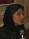

پذيرش > تریبون > گزارش كمپين > تشکیل گروه های کوچک داوطلبان؛ راهکاری برای هماهنگی اعضای کمپین
 در نشست پیگیری داوطلبان کمپین یک میلیون امضا عنوان شد: در نشست پیگیری داوطلبان کمپین یک میلیون امضا عنوان شد:

 تشکیل گروه های کوچک داوطلبان؛ راهکاری برای هماهنگی اعضای کمپین تشکیل گروه های کوچک داوطلبان؛ راهکاری برای هماهنگی اعضای کمپین
28 دی 1385 - جلوه جواهری - نسخه قابل چاپ
داوطلبان جمع اوری امضا در کمپین یک میلیون امضا، هر از چند گاهی گردهم می آیند و روند پیشرفت کار را بررسی می کنند.
این نشست ها از سوی کمیته داوطلبان کمپین برگزار می شود و هدف اصلی آن تداوم ارتباط بین اعضای جدید کمپین و استفاده از تجارب آنها برای ادامه حرکت است.
در نشستی که چندی پیش با حضور 17 نفر از اعضای اولیه کمپین و داوطلبان جدید برگزار شد، مشکلات کمپین در ارتباط با نیروهای جدید مورد بحث و تبادل نظر قرار گرفت و پیشنهاداتی برای حل این مشکلات ارائه شد.
کمرنگ بودن ارتباط و هماهنگی با اعضای جدید یکی از مشکلات طرح شده در این نشست بود:به گفته داوطلبان جدید: «افرادی که آموزش می بینند، با دیگران ارتباطی ندارند. مگر آنکه قبلا با هم آشنایی داشته باشند و یا به دلیل ابتکار خودشان، با دیگر افراد حاضر در کارگاه ارتباط برقرار کرده باشند. در غیر این صورت نمی دانند مشکلات خود را با که بیان کنند. و ارتباطشان با اعضای کمپین کمرنگ است.علاوه بر این خود داوطلبان نیز ارتباط چندانی با یکدیگر ندارند و تجربه هایی که گروه ها و افراد طی امضا جمع کردن کسب می کنند، به دیگران منتقل نمی شوند. »
پیشنهادی که برای حل این مشکل ارائه شد، تشکیل گروه های کوچک بود :«می توان گروه های کوچکی تشکیل داد و به جای آنکه یک گروه هماهنگ کننده متشکل از تعداد زیادی از داوطلبان باشد، در گروه های کوچک هماهنگی صورت گیرد. هر گروه می تواند یک فرد ارتباطی را معرفی کند که به صورت چرخشی تغییر کند. در این صورت آن افراد ، ارتباطات بین گروهی را برقرار می کنند. به این ترتیب گروه ها می توانند از نحوه فعالیت یکدیگر و هم چنین تجربه های هم با خبر شوند و اطلاعات خود را نیز منتقل کنند.»
یک پیشنهاد دیگر هم این بود که: «گروه ها طبق منطقه سکونت، شغل، سن و یا بر اساس هم فکری و هم روشی تشکیل شوند، تا ارتباط داوطلبان هر گروه با همدیگر راحت تر باشد.»
بنا به نظر شرکت کنندگان در این نشست اینترنت نیز می تواند راهکار دیگری برای ارتباط هر چه بیشتر اعضا با یکدیگر باشد: «اینترنت می تواند کمبود مکان برای جمع شدن و بحث کردن را جبران کند. همچنین می تواند پل ارتباطی بین گروهی نیز باشد. اینگونه به غیر از آنکه یکی از افراد یک گروه فرد ارتباطی و میانجی است، همه افراد به وسیله اینترنت می توانند با هم ارتباط داشته باشند و به طور مستقیم از نظرات هم آگاه شوند. »
یکی از حاضران در نشست نیز پیشنهاد داد: «در هر کارگاه دو یا سه نفر از داوطلبان با تجربه و یا کمیته داوطلبان حاضر باشند و تجربیات قبلی به اعضای جدید منتقل کنند ، هم چنین شماره ها و ایمیل های افراد حاضر در کارگاه را گرفته و آنها را تشویق کنند تا یک یا دو گروه تشکیل دهند.»
نگرانی دیگر داوطلبان مشخص نبودن خط مشی ها و سیاست های کمپین برای اعضای جدید بود: « داوطلبانی که تازه به این جمع پیوسته اند، نمی دانند کمپین در کل چه خطی مشی و سیاست هایی دارد و این تصمیم گیری ها توسط چه کسانی گرفته می شوند. اگر کمپین به شیوه ای زنانه اداره می شود، این شیوه چگونه است.»
به اعتقاد آنها کمپین در ادامه رشد خود باید روشی را برای سازماندهی افراد پیش بگیرد. اگر همینگونه رشد کند و هیچ تمهیدی نیاندیشد و به کار نگیرد، روز به رو هماهنگ کردن نیورهای جدید سخت تر خواهد شد. نیروها به این ترتیب پراکنده می شوند و این همه انرژی که صرف جذب آنها میشود اگر برای حفظ آنها نیز شود، نتایج پربارتری برای کمپین و در نهایت جنبش زنان خواهد داشت.
اعضای قدیمی تر کمپین نیز ، پیشنهاد دادند برای اینکه همه از تصیم گیری های شورای عمومی اطلاع داشته باشیم. می توان افرادی را که انگیزه بیشتری دارند و حداقل یک ماه از فعالیتشان می گذرد به ایمیل گروپ کمپین که اکنون اعضا در آن عضوند اضافه کرد تا آنها هم در تصمیم گیری های شرکت داشته باشند. به این ترتیب تعهد کاری افراد بیشتر می شود و همچنین اطلاعات بیشتری کسب کرده و توانایی بیشتری را برای تصمیم گیری ها خواهند داشت.
تشکیل گروه های مطالعاتی، تحقیق درباره جنبش های زنان در نقاط مختلف دنیا و اطلاع رسانی درباره برنامه هایی که در حوزه زنان برگزار می شود نیز راهکارهایی بود که در رابطه با ضعف تئوریک برخی اعضای جدید و علاقه آنها به مطالعه در این زمنیه مطرح شد. همچنین قرار شد نتیجه جلسات مطالعاتی در اختیار همه اعضای کمپین قرار بگیرد و شرکت کنندگان در نشست های علمی نز گزارش جلسه را برای سایر اعضا ارسال کنند.
در رابطه با این مسئله که سایت به صورت مرکزی هدایت می شود. و برآیند تفکر و عمل همه گروه هایی که در کمپین کار می کنند، نیست نیز پیشنهاد شد: هر گروهی که تشکیل می شود بخشی را به نام خود در سایت داشته باشد و اداره آن بخش را نیز بر عهده داشته باشد.
گذاشتن قرارهای گروهی برای جمع کردن امضا، استفاده از تجربه افراد با سابقه کمپین برای مواقع بحرانی و مواجه شدن با مشکلات احتمالی، حضور اعضای اولیه کمپین در جلسات داوطلبین جدید و تبادل تجربیات، فعال کردن کمپین در دانشگاه ها و تاثیر گذاشتن بر محیط مردانه انجمن های اسلامی و تشویق اعضای جدید کمپین به کار کردن با اینترنت و آموزش به آنها نیز از دیگر مواردی بود که در این نشست مطرح شد.
ستاره سجادی، نسیم سرابندی، سمیه رشیدی، زارا امجیدیان، فروغ قره داغی، نیلوفر گلکار، صبا روحانی زاده، نجمه زارع، سمیه فرید، ناهید کشاورز، نیلوفر مهدیان، جلوه جواهری، نازلی فرخی، مارال فرخی، زینب پیغمبرزاده، و هدی امینیان در این نشست شرکت داشتند.
ارسال به
بالاترین
،
توییتر
،
فریندفید
،
فیسبوک
در همين بخش :
 دهمین دورۀ مراسم تندیس صدیقه دولت آبادی ۱۳۹۲ دهمین دورۀ مراسم تندیس صدیقه دولت آبادی ۱۳۹۲
کارت پستالهایی به بهانهی هشت مارس و به یاد همهی مبارزین راه برابری
بیانیه بیش از 350 تن از مدافعان حقوق زنان به مناسبت روز جهانی زن؛ زنان هر روز فرودستتر میشوند
لباسی که برای تن ما دوخته اند! /اعظم بهرامی
چالشها و چشمانداز فعالیت مدنی زنان
ديگر بخش ها :
طرح یک میلیون امضا
|
مقالات
|
سایت نوشته ها
|
اخبار
|
گزارش كمپين
|
گفت و گو
|
علیه سکوت
|
كوچه به كوچه
|
نامه های شما
|
گزارش ویژه
|
گفتگو با اعضا
|
ویژه سالگرد کمپین
|
تصویر برابری
|
دل آرام علی
|
تریبون
|
مقالات
|
تاریخ شفاهی
|
خارج از چارچوب
|
کتابخانه
|
درباره کمپین
|
کمپین در شهرها
|
کمپین در بند
|
صدای تغییر
|
ویژه 22 خرداد
|
لایحه حمایت از خانواده
|
گالری
|
عشا مومنی
|
امیر یعقوبعلی
|
خدیجه مقدم
|
راحله عسگری زاده و نسیم خسروی
|
پروین اردلان،جلوه جواهری، مریم حسین خواه، ناهید کشاورز
|
زینب پیغمبرزاده
|
سعیده امین، سارا ایمانیان، محبوبه حسین زاده، ناهید کشاورز و همایون نامی
|
احترام شادفر
|
نسیم سرابندی زاده،فاطمه دهدشتی
|
وبلاگ مهمان
|
پرونده خرم آباد
|
دستگیری ها
|
مریم مالک
|
پرستو اللهیاری
|
مهرنوش اعتمادی
|
سمیه رشیدی
|
Other Languages
|
همراهان
|
«فراخوان کمپین ده روز با بهاره هدایت»
| English
|